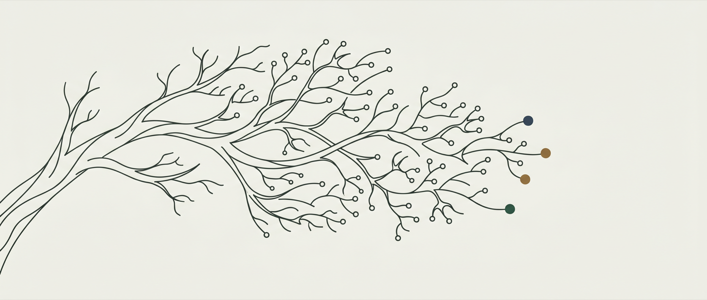

Contre-jour
Ce que personne ne regarde encore
L'ombre devient un actif quand la chaleur devient un risque. La heatmap rassure, mais le monde bouge plus vite qu'elle ne se met à jour.
Ici se croisent la lecture des signaux faibles, l'architecture des systèmes qui pensent avec nous, et l'écriture d'un roman qui explore la même chose autrement : ce qu'on ne voit pas encore venir.

L'ombre devient un actif quand la chaleur devient un risque. La heatmap rassure, mais le monde bouge plus vite qu'elle ne se met à jour.
Un outil qui oublie tout entre deux sessions ne fait gagner du temps qu'une fois. Alors on construit le sien.
Eva Langevin, Paris 2028. Le roman fait entrer en fiction ce qu'un rapport n'oserait pas formuler.
Trente ans à observer comment les organisations décident sous pression — Danone, AXA, puis Decathlon. En parallèle : un roman qui pose la même question autrement, et les outils qu'il faut construire soi-même quand la pensée ne suit pas les rails prévus pour elle.